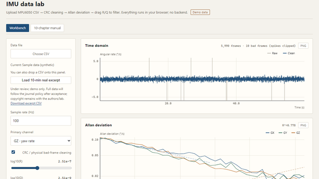
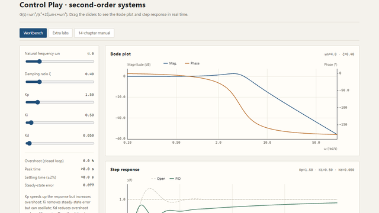
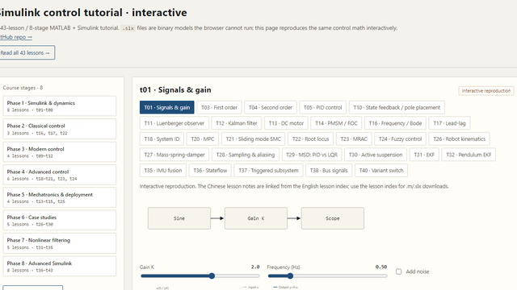

INSTRUMENT 01
IMU data lab
Upload CSV → CRC cleaning → three-axis Allan → fit ARW/RRW → tune R/Q and watch a Kalman filter. Includes a 10-chapter lab manual, PNG/CSV export and shareable parameter links.

INSTRUMENT 02
Control Play
Bode, step and PID loops for a second-order plant, plus four extra labs: state feedback, observer, root locus and discretization. Includes a 14-chapter manual.

TUTORIAL 03
Simulink tutorial · interactive
43 lessons across 8 stages: 43 beginner guides and 19 interactive reproductions (signals, PID, Kalman, Bode, MPC, sliding mode, root locus, fuzzy, IMU, Stateflow…), with .m/.slx sources.
